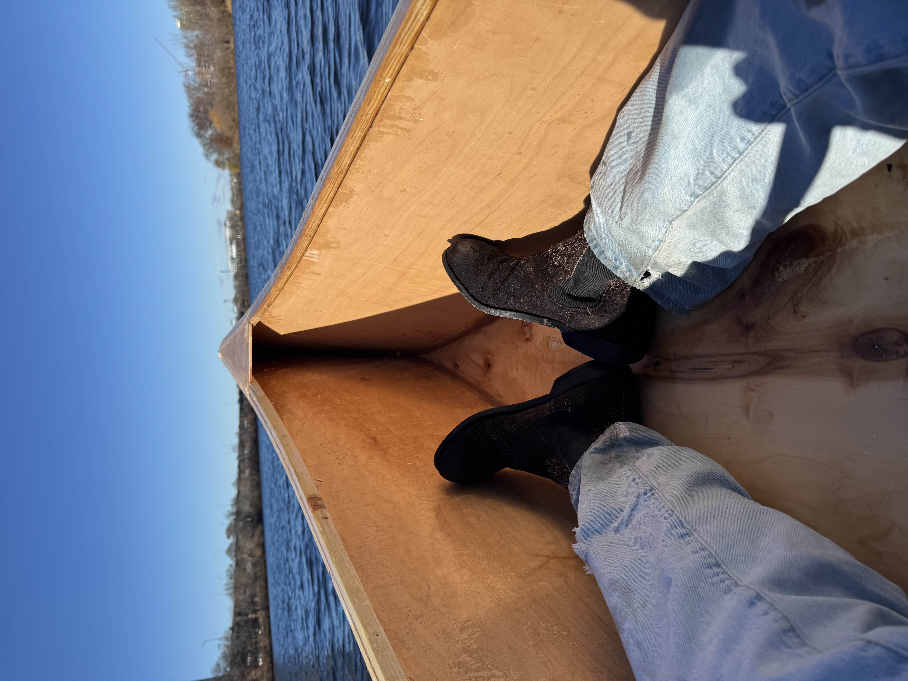
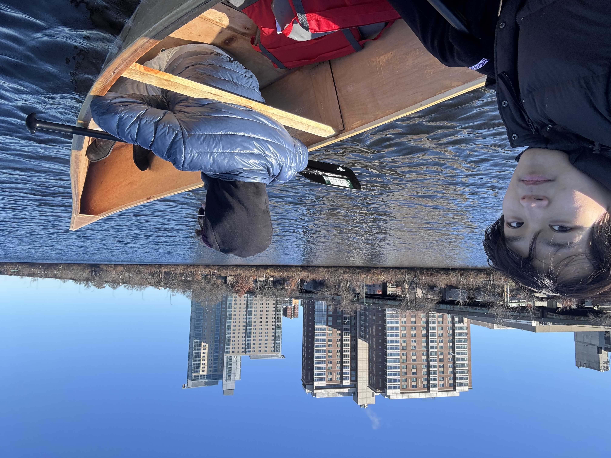
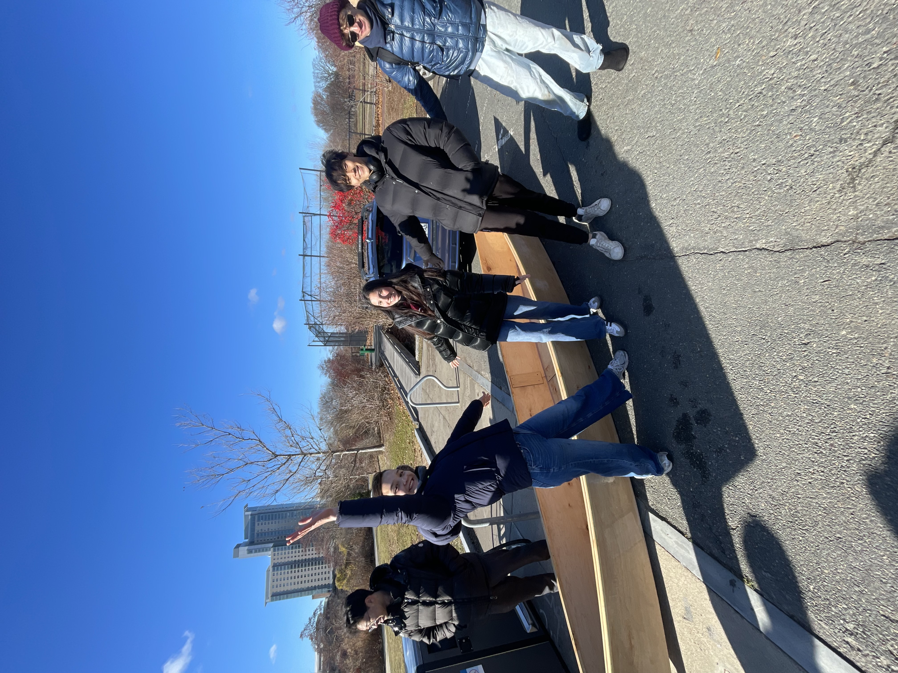

### Week 12: Crossing the Charles
Is your team’s boat capable of ferrying the team across the river? Meet at the Newell Boat House. Present your team’s boat to assembled guests and demonstrate its ability to cross the Charles.
#### Team speed docs
The final day! Our boat was up to speed (no pun intended) and succesfully traversed the Charle's river numerous times.
<img src="IMG_1686.jpeg" width="70%" alt="">


